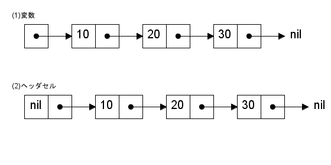
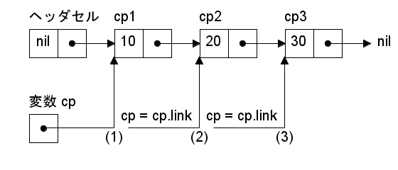
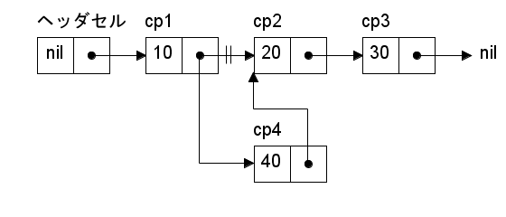
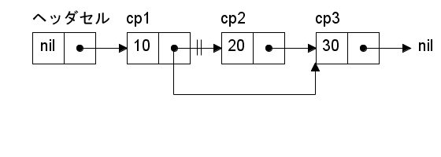

前回は一般的なオブジェクト指向の基本的な考え方と、Ruby の基本的なオブジェクト指向機能について説明しました。今回はオブジェクト指向機能を使った簡単な例題として、連結リスト (linked list) という基本的なデータ構造を作成します。
連結リストを扱うプログラミング言語といえば Lisp が有名です。他のプログラミング言語、たとえば関数型言語 (ML や Haskell など) や論理型言語の Prolog も、組み込みのデータ構造として連結リストを装備しています。また、他のデータ構造を実装するときに連結リストを用いる場合があります。連結リストは基本的で重要なデータ構造の一つなのです。
スクリプト言語の多くは、標準で可変長配列を装備しているため、連結リストを使う機会はほとんどないと思います。しかしながら、ちょっと複雑なデータ構造を作ろうとしたとき、連結リストはとても役に立ちます。また、Ruby で新しいコレクションを作るときの例題としても適しています。連結リストは難しいデータ構造ではないので、これを機会にマスターしておきましょう。
今回取り上げる連結リストはデータを一方向 [*1] につないだデータ構造です。図 1 に連結リストの構造を示します。

図 1 : 連結リストの構造
連結リストはセル (cell) というデータをつなげて作ります。セルにはデータを格納する場所と、次のセルを指し示す場所から構成されます。図 1 でいうと、箱がひとつのセルを表していて、左側にデータを格納し、右側に次のセルへの参照を格納します。リストの終わりを示すため、最後のセルの右側には特別な値 (nil) を格納します。そして、図 1 (1) のように先頭セルへの参照を変数に格納しておけば、この変数を使って連結リストにアクセスすることができます。また、図 1 (2) のようにヘッダセルを用意する方法もあります。
連結リストの長所は、データの挿入や削除が簡単にできることです。配列でデータの削除や挿入を行う場合、要素を移動しなければいけませんが、連結リストはセルを付け替えるだけで実現できます。逆に、配列はどの要素にも一定の時間でアクセスすることができますが、連結リストはセルを順番にたどっていくため、後ろのデータになるほどアクセスに時間がかかります。これが連結リストの短所です。
それではプログラムを作りましょう。最初に、連結リストを表すクラス List とセルを表すクラス Cell を定義します。リスト 1 を見てください。
リスト 1 : 連結リストの定義
class List
# セルの定義
class Cell
attr_accessor :data, :link
def initialize(data, link = nil)
@data = data
@link = link
end
end
def initialize(*args)
@top = Cell.new(nil) # Header Cell をセット
args.reverse_each do |x|
insert!(0, x)
end
end
attr_accessor :top
protected :top, :top=
...
end
セルは連結リストを構成する部品で、他のクラスから利用されることはありません。そこで、クラス Cell はクラス List の中で定義することにします。このように、クラス定義は入れ子にすることができます。なお、入れ子にしたクラスは List::Cell のように :: を使って参照することができます。また、クラス内の定数も :: を使って参照することができます。
クラス List の内部では List:: をつけなくても参照できるのに対し、それ以外の場所では List::Cell としなければならず、余計な手間がかかるようになります。厳密な意味で Cell を隠蔽することはできませんが、連結リストを実装する場合はこれで十分だと思います。
Cell のインスタンス変数 @data にデータを格納し、@link に次のセルへの参照を格納します。Ruby の場合、オブジェクトは参照渡しされるので、渡されたセルをそのまま @link にセットするだけです。あとは attr_accessor でアクセスメソッドを定義します。
次に、セルを使って連結リストクラス List を作成します。List はセルを保持するインスタンス変数 @top を用意します。メソッド initialize() で、@top にヘッダセルをセットします。ヘッダセルの @data はダミーで、このプログラムでは nil をセットします。
initialize() は可変個の引数を受け取るようにすると便利です。メソッド reverse_each() で配列 args の後ろから要素 x を取り出し、メソッド insert!() で連結リストの先頭に x を追加していきます。これで、連結リストには args と同じ順番でデータを並べることができます。
次は、連結リストを操作するメソッドを定義します。基本的なメソッドを表 1 に示します。
| メソッド | 機能 |
|---|---|
| ls.at(n) | n 番目の要素を求める |
| ls.insert!(n, x) | n 番目の位置にデータ x を挿入する |
| ls.delete_at!(n) | n 番目の要素を削除する |
| ls.empty?() | 連結リストが空の場合は真を返す |
ls は List のインスタンスを表します。要素の位置は配列と同様に 0 から数えることにします。位置 n がリストの長さよりも大きい場合、どのメソッドでも nil を返すことにします。メソッド empty?() は連結リストが空の場合は true を返し、データがあれば false を返します。この処理は簡単で、リスト 2 のようになります。
リスト 2 : 空リストか
def empty?
!@top.link
end
インスタンス変数 @top にセルがつながっていない場合、@top.link の値は nil になります。したがって、!@top.link は true になり、セルがある (データがある) 場合は false となります。
最初に、作業用のメソッドとして n 番目のセルを求める処理を作ります。メソッド名は nth() としました。リスト 3 を見てください。
リスト 3 : n 番目のセルを求める
def nth(n)
i = -1
cp = @top
while cp
return cp if n == i
i += 1
cp = cp.link
end
end
private :nth
nth() は private メソッドに設定します。最初に、ヘッダセルを cp にセットします。ヘッダセルから数えるので、変数 i は -1 に初期化します。次に、while ループでセルをたどり、i が n と等しくなったとき、そのセルを return で返します。
セルのたどり方は実に簡単です。図 2 を見てください。

図 2 : セルのたどり方
セル cp1 の @link にはセル cp2 への参照が格納されています。変数 cp が cp1 を指している場合 (図 2 (1))、cp = cp.link とすれば、cp の値はセル cp2 になります (図 2 (2))。さらに cp = cp.link とすれば、cp の値は cp3 になります (図 2 (3))。
nth() の場合、while ループでセルをたどっていきますが、途中でセルがなくなった場合、cp の値は nil になるので while ループを終了して nil を返すことになります。
それでは、n 番目の要素を求めるメソッド at() から作りましょう。リスト 4 を見てください。
リスト 4 : n 番目の要素を求める
def at(n)
cp = nth(n)
cp.data if cp
end
nth() を呼び出して n 番目のセルを求めます。cp が nil でなければ、格納されているデータ cp.data を返します。cp が nil の場合は nil が返されます。
次は、データの挿入を行うメソッド insert!() を作りましょう。データの挿入はセルの @link を書き換えることで実現できます。図 3 を見てください。セル cp1 とセル cp2 の間に、セル cp4 を挿入します。

図 3 : データの挿入
セル cp1 の後ろにセル cp4 を挿入する場合、セル cp1 の @link にはセル cp2 への参照がセットされているので、この値をセル cp4 の @link にセットします。これで、セル cp4 とセル cp2 がリンクされます。次に、セル cp1 の @link にセル cp4 への参照をセットします。これで、セル cp1 とセル cp2 の間に、セル cp4 を挿入することができます。
プログラムをリスト 5 に示します。
リスト 5 : データの挿入
def insert!(n, data)
cp = nth(n - 1)
if cp
cp.link = Cell.new(data, cp.link)
data
end
end
連結リストにデータを挿入する場合、挿入する位置のひとつ手前のセルが必要になります。nth() で n - 1 番目のセルを求めます。セル cp が見つかれば、cp の後ろに data を挿入します。n が 0 の場合、nth() はヘッダセルを返すので、リストの先頭にデータが挿入されることになります。
Cell.new(data, cp.link) で data を格納する新しいセルを生成します。第 2 引数に cp.link を指定することで、新しいセルの後ろに、cp の後ろのセルを接続することができます。そして、cp.link の値を新しいセルに書き換えます。これで cp の後ろに新しいセルを挿入することができます。最後に挿入した data を返します。
次は、データを削除するメソッド delete_at!() を作りましょう。

図 4 : データの削除:セル(2) を削除する場合
データを削除する場合も、セルを付け替えるだけで済ますことができます。図 4 を見てください。セル cp1 の後ろにあるセル cp2 を削除する場合、セル cp1 の @link をセル cp3 への参照に書き換えればいいのです。セル cp3 はセル cp2 の @link から求めることができます。つまり、セル cp1 を保持する変数を cp とすると、セル cp3 は cp.link.link で求めることができます。
プログラムをリスト 6 に示します。
リスト 6 : データの削除
def delete_at!(n)
cp = nth(n - 1)
if cp and cp.link
data = cp.link.data
cp.link = cp.link.link
data
end
end
データを削除する場合も、削除する位置のひとつ手前のセルが必要になります。nth() で n - 1 番目のセルを求めます。セル cp が見つかれば、cp の後ろのセルを削除します。
次に、削除するセルがあるか cp.link の値をチェックします。値が nil でなければ、そのセルを削除します。まず、削除するセルに格納されているデータを data に取り出します。それから cp.link の値を cp.link.link に書き換えます。最後に data を返します。
ところで、連結リストからはずされたセルは @top からアクセスすることができなくなります。Ruby の場合、どの変数からも参照されなくなったオブジェクトはゴミとなり、「ゴミ集め (GC)」[*2] によって回収されて再利用されます。
GC がないプログラミング言語では、不要になったオブジェクトは自動的に回収されません。それを行うようにプログラムする必要があるのです。Ruby のように GC があるプログラミング言語では、ゴミになったオブジェクトは自動的に回収されるので、プログラマの負担はそれだけ軽くなります。
連結リストの基本的な操作はこれで十分なのですが、これをそのまま Ruby で使うにはちょっと不便です。イテレータとしてメソッド each() を定義すると使い勝手が大幅に向上します。さっそく連結リストにも each() を実装してみましょう。リスト 7 を見てください。
リスト 7 : イテレータ
def each
cp = @top.link
while cp
yield cp.data
cp = cp.link
end
self
end
each() はセルを順番にたどり、そこに格納されているデータをブロックに渡して実行するだけです。最後に連結リストを返します。self は特殊変数で、たとえばメソッドを obj.method() の形式で呼び出した場合、method() の中で self の値は obj になります。つまり、メソッド each() の中で self の値はオブジェクト自身になります。なお、self.method() の呼び出しは self を省略することができます。
このほかに、連結リストを配列に変換するメソッド to_a() と文字列に変換するメソッド to_s() を定義すると便利です。リスト 8 を見てください。
リスト 8 : データの変換
# 配列に変換
def to_a
a = []
each do |x| a.push(x) end
a
end
# 文字列に変換
def to_s
"(" << to_a.join(",") << ")"
end
def inspect
sprintf("#<List:%#x>", self.object_id)
end
to_a() は each() を使うと簡単です。each() で要素を先頭から順番に取り出して、それを配列 a に追加するだけです。この場合の each() は self.each() と同じ意味です。最後に配列を返します。
to_s() も簡単です。連結リストを to_a() で配列に変換し、要素を join() で連結します。各要素は join() で文字列に変換され、カンマ ( , ) をはさんで連結されます。to_s() が定義されていると、print() や puts() で連結リストを表示することができます。メソッド inspect() は暗黙のうちにオブジェクトを文字列に変換するときに呼ばれます。たとえば、組み込み関数 p() でオブジェクトを表示するときなどです。
それでは簡単な実行例を示しましょう。
irb> a = List.new 1,2,3,4,5 => #<List: ... > irb> puts a (1,2,3,4,5) => nil irb> for x in a irb> puts x irb> end 1 2 3 4 5 => #<List: ... > irb> a.to_a => [1, 2, 3, 4, 5]
ところで、配列やハッシュのように連結リストでも要素のアクセスに角カッコ [ ] を使うことができると便利です。Ruby の場合、演算子の多くはメソッドとして実装されているので、List クラスで演算子に対応するメソッドを定義すれば、クラス独自の処理を行わせることができます。定義できる演算子については Ruby のマニュアルをお読みください。
角カッコで要素をアクセスする場合、メソッド []() と []=() を定義します。リスト 9 を見てください。
リスト 9 : 角カッコ [] でのアクセス
# 参照
def [](n)
at(n)
end
# 代入
def []=(n, value)
cp = nth(n)
if cp
cp.data = value
end
end
メソッド [](n) は n 番目の要素を返します。これは at() を呼び出すだけです。メソッド []=(n, value) は list[n]= value の意味で、n 番目の要素を value に書き換えます。nth() で n 番目のセルを求めて、そのセルの data を value に書き換えるだけです。[]=() は連結リストを破壊的に修正することに注意してください。どちらの場合も、連結リストの範囲外の場合は nil を返します。
実行例を示します。
irb> a = List.new 10, 20, 30, 40, 50 => #<List: ... > irb> a[0] => 10 irb> a[4] => 50 irb> a[3] = 400 => 400 irb> puts a (10, 20, 30, 400, 50) => nil irb> a.delete_at! 2 => 30 irb> puts a (10, 20, 400, 50) => nil
a[4] で連結リストの要素を取り出し、a[3] = 400 で要素を書き換えることができます。そして、delete_at!(2) で 2 番目の要素を削除することができます。
次はリストを連結する演算子 + を実装します。リスト 10 を見てください。
リスト 10 : 連結リストの連結
def append(cp1, cp2)
if !cp1
cp2
else
Cell.new(cp1.data, append(cp1.link, cp2))
end
end
private :append
def +(other)
raise TypeError if !other.instance_of?(List)
ls = List.new
ls.top.link = append(@top.link, other.top.link)
ls
end
メソッド +() は、private メソッド append() で 2 つのリストを連結します。a + b で +() が呼び出されるとき、a は self にセットされ、b は引数 other にセットされます。self は List のインスタンスですが、引数 other のデータ型はわかりません。
このため、instance_of?() を使って List のインスタンスであることを確認しています。raise はエラーを送出する関数です。エラー処理は回を改めて説明します。
append() は再帰定義でプログラムしていて、引数 cp1 をコピーしてその後ろに cp2 を連結します。cp2 はコピーしていないことに注意してください。append() の動作を図 5 に示します。
図 5 : append の動作
引数 cp1 が nil であればセル cp2 をそのまま返します。そうでなければ、cp1.link を append() に渡して再帰呼び出しします。そして、その結果と cp.data を Cell.new() で接続すればいいのです。これで cp1 をコピーして、その後ろに cp2 をつなげることができます。
それでは実行例を示します。
irb> a = List.new 1, 2, 3, 4 => #<List: ... > irb> b = List.new 5, 6, 7, 8 => #<List: ... > irb> c = a + b => #<List: ... > irb> puts a (1,2,3,4) => nil irb> puts b (5,6,7,8) => nil irb> puts c (1,2,3,4,5,6,7,8)
List.new() で連結リストを生成して変数 a, b にセットします。c = a + b とすると、c には a と b をつなげた連結リストがセットされます。演算子 + によるリストの連結は破壊的な修正を行わないので、変数 a, b のリストは元のままです。
最後に、演算子 * を実装しましょう。連結リストの繰り返しも append() を使うと簡単にプログラムすることができます。リスト 11 を見てください。
リスト 11 : 連結リストの繰り返し
def *(n)
ls = List.new
n.times do
ls.top.link = append(@top.link, ls.top.link)
end
ls
end
append() は第 1 引数をコピーするので、n 回 append() を適用して、@top.link のリストを n 回連結すればいいわけです。
それでは実行例を示します。
irb> a = List.new 1, 2, 3 => #<List: ... > irb> b = a * 3 => #<List: ... > irb> puts b (1,2,3,1,2,3,1,2,3) => nil irb> puts a (1,2,3) => nil
List.new() で連結リストを生成して変数 a にセットします。b = a * 3 とすると、b には a を 3 回繰り返した連結リストがセットされます。演算子 * によるリストの繰り返しは破壊的な修正を行わないので、変数 a のリストは元のままです。
連結リストは基本的なデータ構造ですが、スクリプト言語の多くは可変長配列やハッシュをサポートしているため、連結リストが必要になるケースは少ないと思います。これに対し、関数型言語のほとんどは標準で連結リストをサポートしています。その代表といえば、やっぱり Lisp になるでしょう。
Lisp という名称の由来である「LISt Processor」からもわかるように、Lisp はリスト処理が得意なプログラミング言語です。リスト処理を学ぶのに Lisp は最適ですが、それだけが Lisp の特徴ではありません。Lisp は多くのプログラミング言語に大きな影響を与えています。ほかの言語を学習していると、Lisp から取り込んだ機能を見かけることがよくあります。
たとえば、Lisp には「無名関数 (ラムダ式)」や「クロージャ」といった機能がありますが、これらは Perl, Python, Ruby など多くのスクリプト言語に取り込まれています。今では当たり前になったガベージコレクションも Lisp で培われた技術です。また、Lisp のリストはデータ構造の役割だけではなく、プログラム自身を表すためにも使われています。このため、Lisp ではプログラムを操作するプログラムを簡単に書くことができます。Lisp の「マクロ」はこの特徴を活用した機能です。
Lisp のプログラムはカッコが多くなるので嫌いな方も多くいるのですが、筆者は学習するに値するプログラミング言語だと思っています。Lisp の基本は簡単なので、少し勉強するだけでプログラムを作ることができるようになります。フリーな Lisp 処理系はいろいろありますが、Common Lisp であれば CLISP が使いやすいと思います。また、エディタ Emacs や xyzzy のユーザであれば、そこに搭載されている Lisp で試してみることもできます。興味のある方は Lisp プログラミングにも挑戦してみてください。
連結リストを例題にして、具体的なクラス (コレクション) の実装方法や演算子の定義方法について説明しました。Ruby で新しいコレクションを作成する場合、メソッド each() と適切な演算子を定義するだけで、組み込みのコレクションと同様に使うことができるようになります。次回は継承について説明します。
#
# list10.rb : お気楽 Ruby プログラミング入門
# 第 10 回 プログラムリスト
#
# Copyright (C) 2008 Makoto Hiroi
#
# 連結リストクラス
class List
# セルの定義
class Cell
attr_accessor :data, :link
def initialize(data, link = nil)
@data = data
@link = link
end
end
# 初期化
def initialize(*args)
@top = Cell.new(nil) # Header Cell をセット
args.reverse_each do |x|
insert!(0, x)
end
end
attr_accessor :top
protected :top, :top=
# n 番目のセルを求める
def nth(n)
i = -1
cp = @top
while cp
return cp if n == i
i += 1
cp = cp.link
end
end
private :nth
# n 番目にデータを挿入する
def insert!(n, data)
cp = nth(n - 1)
if cp
cp.link = Cell.new(data, cp.link)
data
end
end
# n 番目のデータを求める
def at(n)
cp = nth(n)
cp.data if cp
end
# n 番目のデータを削除する
def delete_at!(n)
cp = nth(n - 1)
if cp and cp.link
data = cp.link.data
cp.link = cp.link.link
data
end
end
# 空リストか
def empty?
!@top.link
end
# 演算子 [] の定義
# 参照
def [](n)
at(n)
end
# 代入
def []=(n, value)
cp = nth(n)
if cp
cp.data = value
end
end
# リストの連結
def append(cp1, cp2)
if !cp1
cp2
else
Cell.new(cp1.data, append(cp1.link, cp2))
end
end
private :append
def +(other)
raise TypeError unless other.instance_of?(List)
ls = List.new
ls.top.link = append(@top.link, other.top.link)
ls
end
def *(n)
ls = List.new
n.times do
ls.top.link = append(@top.link, ls.top.link)
end
ls
end
# Enumerable 用
def each
cp = @top.link
while cp
yield cp.data
cp = cp.link
end
self
end
# 配列に変換
def to_a
a = []
each do |x| a.push(x) end
a
end
# 文字列に変換
def to_s
"(" << to_a.join(",") << ")"
end
def inspect
sprintf("#<List:%#x>", self.object_id)
end
end